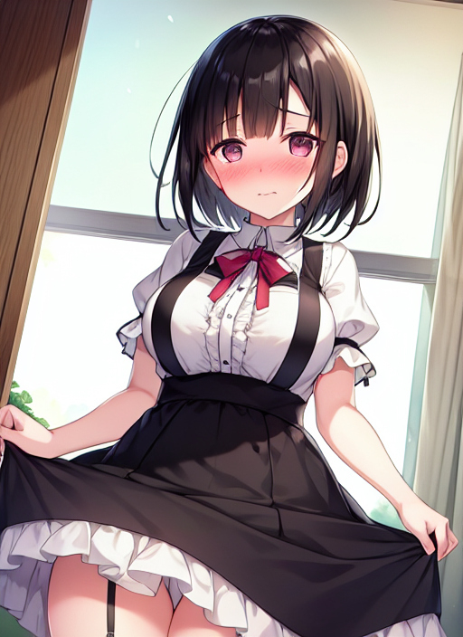

ランドセル
夏休みのある日、大学２年生の瀬戸あつきは自分の部屋の掃除をしていた。
「ここしばらく掃除をしてなかったし、部屋の模様替えもかねて片付けるかな。」
あつきは早速、押し入れの中身を出していらないものの処分に取り掛かった。
だが、しばらくするとあつきは手を止めて押し入れから出したものを色々見ながら懐かしんでいるのだった。
「このアイドルグループ、小学生のときめっちゃはまったっけ♪」
いろいろ物を出しているうちに、ある箱が奥から出てきた。
「何だろう、この箱？」
あつきはその箱を開けてみると、中から赤色のランドセルと黄色の帽子、そして“中村小 瀬戸”と書かれた紺色の小学校の名札が出てきた。
「なんだこれ？ なんで赤色のランドセルがオレの部屋にあるんだ？ もしかして、冬実のやつか？」
箱の中身に見に覚えのないあつきは、妹の冬実のものだと判断した。
「帰ってきたら冬実に聞くとするか。」
そう言って、箱から出したものをまたしまい始めた。
すると、あつきに囁くようにどこからか声が聞こえてきた。
『わたしをもう一度使って…』
「えっ！？」
一瞬固まるあつき。
「今の声、どこから…？」
あたりを見渡すが、部屋にはあつき以外誰もいない。
「気のせいか。」
そう言って、ランドセルや名札を入れた箱のふたを閉じようとした、その時。
『ふたを閉じないで！！』
「うわっ！？」
あつきは閉じようとした箱のふたを落としてしまった。
その瞬間、箱に入れられたランドセルや黄色の帽子、そして小学校の名札が意思を持ったように箱から出てきた。
「な、なんなんだ！？」
ヤバいと判断したあつきは、駆け足で部屋から脱出しようとドアの方まで向かった。
しかし、鍵のかからないはずのドアなのになぜか開かないのだ。
「なんで開かないんだよ！？」
あわてふためくあつき。
しかし、あつきの背後には箱から出てきたランドセルが近づき、一瞬にしてあつきの肩に背負われた形となった。
「くそ、離せ！ このクソランドセル！！」
あつきはランドセルを外そうとするが、がっちりと固定されていてびくともしない。
『もう一度小学生に戻って、わたしを使って…。』
「えっ！？」
その囁きを聞いたあつきは動きを止めた。
その瞬間、黄色の帽子と小学校の名札があつきの方に近づき、それぞれあつきの頭と着ている服の左胸辺りにくっついた。
『それじゃ、戻ろうか。』
「や、やめろー！！」
あつきが叫んだ途端、からだに変化が起こり始めた。
180ほどあった身長が140ぐらいにまで縮み、運動で鍛えていた腕や脚は細くなっていき、ツルツルとしたものに変わっていった。
髪の毛も、耳くらいまでの長さだったのが肩にかからないくらいにまで伸びて、顔つきも女子のようなプニプニとしたかわいらしいものとなった。
男の持ち物だったものはなくなっていくと同時に、胸元が心なしか膨らみはじめていき、お尻もプルプルと弾むくらいになった。
「や、やめてよ…。」
必死に抵抗を試みるが、直立不動のままなにもできない。
声やしゃべり方も、少女のものへと変化が進み大学生だった姿は微塵も感じられない。
「う、うわーん！！」
とうとう耐えきれなくなり、あつきは大声で泣き始めた。
だが、泣いているあつきを嘲笑うかのようにまだまだ変化が続いたのだった。
ぶかぶかだったTシャツとズボンは一体化したかのように形を変えて、白色でフリルのついたワンピースに変わり、裸足だった脚にはハイソックスが穿かれた。
しばらくして、あつきに起こっていた変化が収まった。
「う、嘘でしょ…。」
あつきは泣きながら部屋の鏡で自分の姿を確認した。
「わたし、本当に小学生になっちゃった…。」
鏡の姿は大学生のあつきではなく、黄色の帽子に赤色のランドセル、胸元には小学校の名札を付けた少女の姿になっていた。
『ふふ…。とってもかわいい女の子になったわね。』
胸元の名札が意思を持ったように揺れながらあつきに囁いた。
『あなたは今日から瀬戸夏海、中村小の５年生よ。』
「そ、そんな…。」
ショックのあまり、あつきはその場で気を失いうつ伏せのまま床に倒れ込んだ。
その後、肩にかけていたランドセルと被っていた黄色の帽子はあつきから離れていき、勉強机の横に掛けられていった。
どれくらい時間がたったのか、あつきは眠りから目を覚ました。
「あれ？ わたし、なにしてたのかな…？」
眠っている間に、あつきの記憶が書き換えられたようで、これまでの出来事を忘れてしまったようだ。
すると、あつきのいる部屋に誰かが入ってきた。
「お姉ちゃん、お帰りー。」
入ってきたのは、高校の部活から帰ってきたあつきの妹の冬実だった。
「ただいまー。夏海、今から暇？」
「暇だけど、なんで？」
「これから駅前のデパートに行くけど、付いてくる？」
「うん、行く♪」
「着替えるの面倒くさいし、制服のままでいいや。あんたも、学校の名札を付けたまま行くつもり？」
「そう言えば名札付けたままだったっけ。けど、外すの面倒くさいからこのままでいいや。」
「そういうところ、わたしに似てるよね。」
「てへへ♪」
「それじゃ、行こうか。」
「うん♪」
そう言って、あつき改め夏海は冬実と一緒にデパートへ出掛けていった。
その姿は、とても仲のいい姉妹そのものだった。